유통관리사-2급 (2020-08-08 기출문제)
1과목: 유통물류일반
1. 아래 글상자의 ㉠, ㉡에서 설명하는 물류영역을 순서대로 나열한 것 중 가장 옳은 것은?
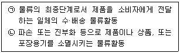
- ㉠판매물류, ㉡회수물류
- ㉠최종물류, ㉡반품물류
- ㉠판매물류, ㉡폐기물류
- ㉠생산물류, ㉡반품물류
- ㉠조달물류, ㉡회수물류
(정답률: 87%)

2. SCM상에서 채찍효과(bullwhip effect)를 방지하기 위한 방법으로 옳지 않은 것은?
- EDI(Electronic Data Interchange) 활용
- 벤더와 소매업체 간의 정보교환
- VMI(Vendor Managed Inventory) 활용
- 일괄주문(order batching) 활용
- S&OP(Sales and Operations Planning) 활용
(정답률: 75%)
3. JIT와 JITⅡ의 차이점에 대한 설명으로 옳지 않은 것은?
- JIT는 부품과 원자재를 원활히 공급받는데 초점을 두고, JITⅡ는 부품, 원부자재, 설비공구, 일반자재 등 모든 분야를 대상으로 한다.
- JIT는 개별적인 생산현장(plant floor)을 연결한 것이 라면, JITⅡ는 공급체인(supply chain)상의 파트너의 연결과 그 프로세스를 변화시키는 시스템이다.
- JIT는 기업 간의 중복업무와 가치없는 활동을 감소∙제거하는데 주력하는 반면, JITⅡ는 자사 공장 내의 가치없는 활동을 감소∙제거하는데 주력한다.
- JIT는 푸시(push)형인 MRP와 대비되는 풀(pull)형의 생산방식인데 비해, JITⅡ는 JIT와 MRP를 동시에 수용할 수 있는 기업 간의 운영체제를 의미한다.
- JIT가 물동량의 흐름을 주된 개선대상으로 삼는데 비해, JITⅡ는 기술, 영업, 개발을 동시화(synchronization)하여 물동량의 흐름을 강력히 통제한다.
(정답률: 63%)
4. 아래 글상자에서 설명하는 한정서비스 도매상의 종류로 옳은 것은?
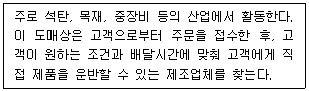
- 현금거래도매상(cash-and-carry wholesalers)
- 트럭도매상(truck jobbers)
- 직송도매상(drop shipper)
- 진열도매상(rack jobber)
- 판매대리인(sales agent)
(정답률: 85%)
5. 아래 글상자의 구매 관련 공급자 개발 7단계 접근법이 옳은 순서로 나열된 것은?
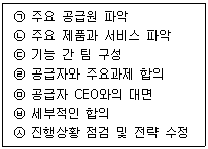
- ㉣-㉤-㉥-㉦-㉠-㉡-㉢
- ㉤-㉥-㉦-㉠-㉡-㉢-㉣
- ㉥-㉦-㉠-㉡-㉢-㉣-㉤
- ㉦-㉠-㉡-㉢-㉣-㉤-㉥
- ㉡-㉠-㉢-㉤-㉣-㉥-㉦
(정답률: 82%)
6. 아래 글상자의 내용은 기사를 발췌한 것이다. ( )안에 공통적으로 들어갈 용어로 가장 옳은 것은?
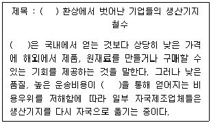
- 리쇼링(re-shoring)
- 오프쇼링(off-shoring)
- 지연(postponement) 전략
- 기민성(agility) 생산방식
- 린(lean) 생산방식
(정답률: 59%)
7. 아래 글상자에서 설명하는 조직구성원에 대한 성과평가방법으로 옳은 것은?
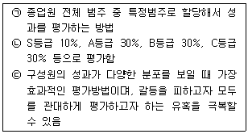
- 단순서열법(simply ranking)
- 강제배분법(forced distribution method)
- 쌍대비교법(paired-comparison method)
- 행위기준고과법(BARS: behaviorally anchored rating scale)
- 행동관찰척도법(BOS: behavioral observation scale)
(정답률: 57%)
8. 인적자원관리(HRM)의 글로벌화 과정을 5단계로 나누어 볼 수 있다. 아래 글상자에서 5단계 중 글로벌(Global)단계에서 각 HRM 과업을 수행하는 방안으로 가장 옳지 않은 것은?
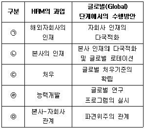
- ㉠
- ㉡
- ㉢
- ㉣
- ㉤
(정답률: 76%)
9. 아래 글상자에서 설명하는 조직구조로 옳은 것은?
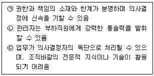
- 라인조직
- 라인-스태프 조직
- 프로젝트 조직
- 매트릭스 조직
- 네트워크 조직
(정답률: 72%)
10. 포터(M. Porter)의 가치사슬분석에 의하면 기업 활동을본원적 활동과 보조적 활동으로 구분할 수 있는데, 이 중 보조적 활동에 속하지 않는 것은?
- 경영혁신
- 서비스활동
- 인적자원관리
- 조달활동
- 기술개발
(정답률: 38%)
11. 기업 수준의 성장전략에 관한 설명으로 가장 옳지 않은 것은?
- 기존시장에서 경쟁자의 시장점유율을 빼앗아 오려는 것은 다각화전략이다.
- 신제품을 개발하여 기존시장에 진입하는 것은 제품개발전략이다.
- 기존제품으로 새로운 시장에 진입하여 시장을 확대하는 것은 시장개발전략이다.
- 기존시장에 제품계열을 확장하여 진입하는 것은 제품개발전략이다.
- 기존제품으로 제품가격을 내려 기존시장에서 매출을높이는 것은 시장침투전략이다.
(정답률: 66%)
12. 유통경로 상에서 기업이 현재 차지하고 있는 위치의 다음 단계를 차지하고 있는 경로구성원을 자본적으로 통합하는 경영전략을 설명하는 용어로 옳은 것은?
- 전방통합(forward integration)
- 아웃소싱(outsourcing)
- 전략적제휴(strategic alliance)
- 합작투자(joint venture)
- 후방통합(backward integration)
(정답률: 69%)
13. 손익계산서 상의 비용항목들이 각 유통경로별 경로활동에 얼마나 효율적으로 투입되었는지를 측정하여 유통경영전략에 따른 유통경로별 수익성을 측정하는 방법으로 옳은 것은?
- 유통비용분석(distribution cost analysis)
- 전략적 이익모형(strategic profit model)
- 직접제품수익성(DPP: direct product profit)
- 경제적 부가가치(EVA: economic value added)
- 중간상 포트폴리오분석(dealer portfolio analysis)
(정답률: 66%)
14. 아래 글상자와 같이 소매점경영전략 변화에 지대한 영향을 준 환경요인으로 가장 옳은 것은?
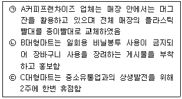
- 경제적 환경
- 법률적 환경
- 사회·문화적 환경
- 기술적 환경
- 인구통계적 환경
(정답률: 53%)
15. 아래 글상자에서 특정산업의 매력도를 평가하는 요인으로 옳게 고른 것은?
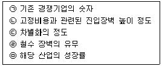
- ㉠
- ㉠, ㉡
- ㉠, ㉡, ㉢
- ㉠, ㉡, ㉢, ㉣
- ㉠, ㉡, ㉢, ㉣, ㉤
(정답률: 85%)
16. 아래 글상자의 비윤리적인 행위와 관련된 내용으로 옳지 않은 것은?
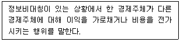
- 보험가입자가 보험에 가입한 후 고의 또는 부주의로 사고 가능성을 높여 보험금을 많이 받아내서 보험회사에게 피해를 줌
- 자신이 소속된 공기업이 고객만족도 내부조작을 하였다는 사실을 감사원에 제보함
- 대리인인 경영자가 주주의 이익보다는 자신의 이익을 도모하는 방향으로 내린 의사결정
- 채권자에게 기업의 재정 상태나 경영 실적을 실제보다 좋게 보이게 할 목적으로 기업이 분식회계를 진행함
- 재무회계팀 팀장이 기업의 결산보고서를 확인하고 공식적으로 발표되기 전에 자사 주식을 대량 매수함
(정답률: 75%)
17. “전통시장 및 상점가 육성을 위한 특별법”(법률 제 16217호, 2019.1.8. 일부개정)에 의해 시행되고 있는 '온누리상품권'에 대한 설명으로 옳지 않은 것은?
- 온누리상품권은 중소벤처기업부 장관이 발행한다.
- 온누리상품권의 종류, 권면금액, 기재사항 등 발행에 필요한 사항은 대통령령으로 정한다.
- 온누리상품권의 유효기간은 발행일로부터 3년이다.
- 개별가맹점(또는 환전대행가맹점)이 아니면 온누리상품권을 금융기관에서 환전할 수 없다.
- 개별가맹점은 온누리상품권 결제를 거절하거나 온누리상품권 소지자를 불리하게 대우하면 안된다.
(정답률: 55%)
18. 아래 글상자에서 설명하는 연쇄점(chain)의 형태로 옳은 것은?
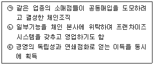
- 정규연쇄점(regular chain)
- 직영점형 연쇄점(corporate chain)
- 임의형 연쇄점(voluntary chain)
- 마스터 프랜차이즈(master franchise)
- 조합형 체인(cooperative chain)
(정답률: 34%)
19. 소매상을 위한 도매상의 역할로 가장 옳지 않은 것은?
- 다양한 상품구색의 제공
- 신용의 제공
- 시장의 확대
- 컨설팅서비스 제공
- 물류비의 절감
(정답률: 52%)
20. 유통경로의 길이(channel length)가 상대적으로 긴 제품으로 가장 옳은 것은?
- 비표준화된 전문품
- 시장 진입과 탈퇴가 자유롭고 장기적 유통비용이 안정적인 제품
- 구매빈도가 낮고 비규칙적인 제품
- 생산자수가 적고 생산이 지역적으로 집중되어 있는 제품
- 기술적으로 복잡한 제품
(정답률: 59%)
21. 유통환경의 변화에 따라 발생하고 있는 현상으로 가장 옳지 않은 것은?
- 소매업체는 온라인과 오프라인 채널을 병행해서 운영하기도 한다.
- 모바일을 이용한 판매비중이 높아지고 있다.
- 1인 가구의 증가에 따라 대량구매를 통해 경제적 합리성을 추구하는 고객이 증가하고 있다.
- 단순구매를 넘어서는 쇼핑의 레저화, 개성화 추세가 나타나고 있다.
- 패키지 형태의 구매보다 자신의 취향에 맞게 다양한 상품을 구입하는 경향이 나타나고 있다.
(정답률: 87%)
22. 주요 운송수단의 상대적 특성에 대한 설명으로 가장 옳지 않은 것은?
- 해상운송은 원유, 광물과 같이 부패성이 없는 제품을 운송하는데 유리하다.
- 철도운송은 부피가 크거나 많은 양의 화물을 운송하는데 경제적이다.
- 항공운송은 신속하지만 단위 거리 당 비용이 가장 높다.
- 파이프라인운송은 석유나 화학물질을 생산지에서 시장으로 운반해주는 특수운송수단이다.
- 육상운송은 전체 국내운송에서 차지하는 비율이 크지 않다.
(정답률: 85%)
23. 아래 글상자는 소매점의 경쟁력 강화를 위한 한 유통물류기법에 대해 설명하고 있다. 해당 유통물류기법으로 가장 옳은 것은?
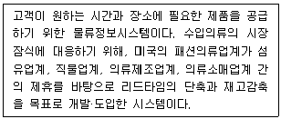
- QR(quick response)
- SCM(supply chain management)
- JIT(just-in-time)
- CRM(customer relationship management)
- ECR(efficient consumer response)
(정답률: 75%)
24. 아래 글상자에서 설명하는 종업원 보상제도는?
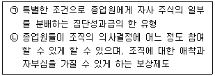
- 이익배분제(profit sharing)
- 종업원지주제(employee stock ownership plan)
- 판매수수료(commissions)
- 고과급(merit pay)
- 표준시간급(standard hour plan)
(정답률: 79%)
25. 다음 표를 토대로 한 보기 내용 중 옳지 않은 것은?
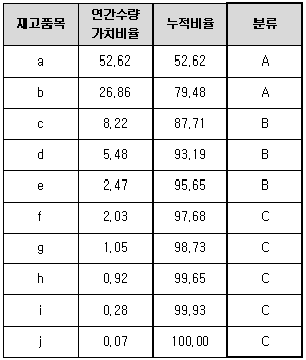
- 롱테일 법칙을 재고관리에 활용한 것이다.
- 재고를 중요한 소수의 재고품목과 덜 중요한 다수의 재고품목을 구분하여 차별적으로 관리하는 기법이다.
- 연간수량가치를 구하여 연간수량가치가 높은 순서대로 배열, 연간수량가치의 70~80%를 차지하는 품목을 A로 분류하였다.
- A품목의 경우 긴밀한 관리가 필요하고 제품가용성이 중요하다.
- C품목의 경우 주문주기가 긴 편이다.
(정답률: 56%)
2과목: 상권분석
26. 소매상권을 분석하는 기법을 규범적분석과 기술적분석으로 구분할 때, 나머지 4가지와 성격이 다른 하나는?
- Applebaum의 유추법
- Christaller의 중심지이론
- Reilly의 소매중력법칙
- Converse의 무차별점 공식
- Huff의 확률적 공간상호작용이론
(정답률: 54%)
27. 소비자들이 유사한 인접점포들 중에서 선택하는 상황을 전제로 상권의 경계를 파악할 때 간단하게 활용하는 티센다각형(Thiessen polygon) 모형에 대한 설명으로 옳지 않은 것은?
- 근접구역이란 어느 점포가 다른 경쟁점포보다 공간적인 이점을 가진 구역을 의미하며 일반적으로 티센다각형의 크기는 경쟁수준과 역의 관계를 가진다.
- 두 다각형의 공유 경계선 상에 위치한 부지를 신규점포부지로 선택할 경우 이곳은 두 곳의 기존 점포들로부터 최대의 거리를 둔 입지가 된다.
- 소비자들이 가장 가까운 소매시설을 이용한다고 가정하며, 공간독점 접근법에 기반한 상권 구획모형의 일종이다.
- 소매 점포들이 규모나 매력도에 있어서 유사하다고 가정하며 각각의 티센다각형에 의해 둘러싸인 면적은 다각형 내에 둘러싸인 점포의 상권을 의미한다.
- 다각형의 꼭짓점에 있는 부지는 기존 점포들로부터 근접한 위치로 신규 점포 부지로 선택시 피하는 것이 유리하다.
(정답률: 51%)
28. 소매점의 입지 대안을 확인하고 평가할 때 의사결정의 기본이 되는 몇 가지 원칙들이 있다. 아래 글상자가 설명하는 원칙으로 옳은 것은?
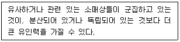
- 접근가능성의 원칙(principle of accessibility)
- 수용가능성의 원칙(principle of acceptability)
- 가용성의 원칙(principle of availability)
- 동반유인원칙(principle of cumulative attraction)
- 고객차단의 원칙(principle of interception)
(정답률: 79%)
29. 소매점포의 입지선정과정에서 광역 또는 지역시장의 매력도를 비교분석할 때 특정지역의 개략적인 수요를 측정하기 위해 구매력지수(BPI: Buying Power Index)를 이용하기도 한다. 구매력지수를 산출할 때 가장 높은 가중치를 부여하는 변수로 옳은 것은?
- 인구수
- 소매점면적
- 지역면적(상권면적)
- 소매매출액
- 소득(가처분소득)
(정답률: 47%)
30. A시의 인구는 20만명이고 B시의 인구는 5만명이다. 두 도시가 서로 15km의 거리에 떨어져 있는 경우, 두 도시간의 상권경계는 A시로부터 얼마나 떨어진 곳에 형성되겠는가? Converse의 상권분기점 분석법을 이용해 계산하라.
- 3km
- 5km
- 9km
- 10km
- 12km
(정답률: 50%)
31. 입지유형별 점포와 관련한 설명으로 가장 옳은 것은?
- 집심성 점포: 업무의 연계성이 크고 상호대체성이 큰 점포끼리 한 곳에 입지한다.
- 집재성 점포: 배후지의 중심부에 입지하며 재화의 도달범위가 긴 상품을 취급한다.
- 산재성 점포: 경쟁점포는 상호경쟁을 통하여 공간을 서로 균등히 배분하여 산재한다.
- 국부적 집중성 점포: 동업종끼리 특정 지역의 국부적 중심지에 입지해야 유리하다.
- 공간균배의 원리: 수요탄력성이 작아 분산입지하며 재화의 도달범위가 일정하다.
(정답률: 59%)
32. 소매점의 입지 유형 중 부도심 소매중심지(SBD: Secondary Business District)에 대한 설명으로 가장 옳지 않은 것은?
- 도시규모의 확장에 따라 여러 지역으로 인구가 분산, 산재되어 생긴 지역이다.
- 근린형 소매중심지이다.
- 주된 소매업태는 슈퍼마켓, 일용잡화점, 소규모 소매점 등이 있다.
- 주간에는 교통 및 인구 이동이 활발하지만 야간에는 인구 격감으로 조용한 지역으로 변한다.
- 주거지역 도로변이나 아파트단지 상점가 등의 형태를 갖추고 있다.
(정답률: 66%)
33. 자금의 조달에 어려움이 없다고 가정할 때, 가맹본부가 하나의 상권에 개점할 직영점포의 숫자를 결정하는 가장 합리적인 원칙은?
- 상권 내 경쟁점포의 숫자에 비례하여 개점한다.
- 한계이익이 한계비용보다 높으면 개점한다.
- 자사 직영점이 입점한 상권에는 개점하지 않는다.
- 자기잠식을 고려하여 1상권에 1점포만을 개점한다.
- 자사 가맹점의 상권이라도 그 가맹점의 허락을 받으면 개점한다.
(정답률: 67%)
34. 이새봄씨가 사는 동네에는 아래 표와 같이 이용 가능한 슈퍼마켓이 3개가 있다. Huff모델을 이용해 이새봄씨의 슈퍼마켓 이용확률이 가장 큰 점포와 그 이용확률을 구하라. (단, 거리와 점포크기에 대한 민감도는 –3과 2로 가정하자. 거리와 매장면적의 단위는 생략)
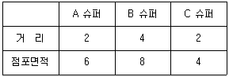
- A 슈퍼 60%
- B 슈퍼 31%
- A 슈퍼 57%
- B 슈퍼 13%
- C 슈퍼 27%
(정답률: 47%)
35. 중심지이론에 관한 내용으로 가장 옳지 않은 것은?
- 상권중심지의 최대도달거리가 최소수요충족거리보다 커야 상업시설이 입점할 수 있다.
- 소비자는 유사점포 중에서 하나를 선택할 때 가장 가까운 점포를 선택한다고 가정한다.
- 어떤 중심지들 사이에는 계층적 위계성이 존재한다.
- 인접하는 두 도시의 상권의 규모는 그 도시의 인구에 비례하고 거리의 제곱에 반비례한다.
- 상업중심지로부터 상업서비스기능을 제공받는 배후 상권의 이상적인 모양은 정육각형이다.
(정답률: 37%)
36. 제품 및 업종형태와 상권과의 관계에 대한 설명으로 옳지 않은 것은?
- 식품은 대부분 편의품이지만, 선물용 식품은 선매품이고 식당이 구매하는 일부 식품은 전문품일 수 있다.
- 선매품을 취급하는 소매점포는 편의품보다 상위의 소매중심지나 상점가에 입지하여 더 넓은 범위의 상권을 가져야 한다.
- 소비자는 생필품을 구매거리가 짧고 편리한 장소에서 구매하려 하므로 생필품을 취급하는 점포는 주택지에 근접한 입지를 선택하는 것이 좋다.
- 전문품을 취급하는 점포의 경우 고객이 지역적으로 밀집되어 있으므로 그 상권은 밀도가 높고 범위는 좁은 특성을 가진다.
- 동일업종이더라도 점포의 규모나 품목구성에 따라 점포의 상권 범위가 달라진다.
(정답률: 71%)
37. 경쟁점포에 대한 조사 목적에 따른 조사 항목으로 가장 옳지 않은 것은?
- 시장지위-경쟁점포의 시장점유율, 매출액
- 운영현황-종업원 접객능력, 친절도
- 상품력-맛, 품질, 가격경쟁력
- 경영능력-대표의 참여도, 종업원관리
- 시설현황-점포면적, 인테리어
(정답률: 59%)
38. “상가건물임대차보호법”(법률 제15791호, 2018. 10. 16., 일부개정) 제10조1항은 '임대인은 임차인이 임대차기간이 만료되기 6개월 전부터 1개월 전까지 사이에 계약갱신을 요구할 경우 정당한 사유 없이 거절하지 못 한다'라고 규정하고 있다. 이 규정 적용의 예외로서 옳지 않은 것은?
- 임차인이 3기의 차임액에 해당하는 금액에 이르도록 차임을 연체한 사실이 있는 경우
- 임차인이 거짓이나 그 밖의 부정한 방법으로 임차한 경우
- 서로 합의하여 임대인이 임차인에게 상당한 보상을 제공한 경우
- 임차인이 임대인의 동의하에 목적 건물의 전부 또는 일부를 전대(轉貸)한 경우
- 임차인이 임차한 건물의 전부 또는 일부를 고의나 중대한 과실로 파손한 경우
(정답률: 52%)
39. 아래 글상자는 체크리스트(Checklist)법을 활용하여 특정입지에 입점할 점포의 상권경쟁구조의 분석 내용을 제시하고 있다. 분석 내용과 사례의 연결이 옳은 것은?
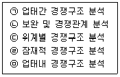
- ㉠ – 동일 상권내 편의점들간의 경쟁관계
- ㉡ - 상권내 진입 가능한 잠재경쟁자와의 경쟁관계
- ㉢ - 도시의 도심, 부도심, 지역중심, 지구중심간의 경쟁관계
- ㉣ - 근접한 동종점포간 보완 및 경쟁관계
- ㉤ - 백화점, 할인점, SSM, 재래시장 상호간의 경쟁관계
(정답률: 64%)
40. 대도시 A, B 사이에 위치하는 중소도시 C가 있을 때 A, B가 C로부터 끌어들일 수 있는 상권규모를 분석하기 위해 레일리(W. Reilly)의 소매인력법칙을 활용할 수 있다. 이 때 꼭 필요한 정보로 옳지 않은 것은?
- 중소도시 C에서 대도시 A까지의 거리
- 중소도시 C에서 대도시 B까지의 거리
- 중소도시 C의 인구
- 대도시 A의 인구
- 대도시 A, B 사이의 분기점
(정답률: 59%)
41. 점포입지나 상권에 관한 회귀분석에 관한 설명으로 가장 옳지 않은 것은?
- 점포의 성과에 대한 여러 변수들의 상대적인 영향력 분석이 가능하다.
- 상권분석에 점포의 성과와 관련된 많은 변수들을 고려할 수 있다.
- 독립변수들이 상호관련성이 없다는 가정은 현실성이 없는 경우가 많다.
- 분석대상과 유사한 상권특성을 가진 점포들의 표본을 충분히 확보하기 어렵다.
- 시간의 흐름에 따라 회귀모델을 개선해 나갈 수 없어 확장성과 융통성이 부족하다.
(정답률: 57%)
42. 상권이나 점포입지를 분석할 때는 고객의 동선을 파악하는 것이 중요하다. 인간심리와 동선과의 관계를 설명하는 일반원리로 가장 옳지 않은 것은?
- 최단거리 실현의 법칙
- 집합의 법칙
- 안전중시의 법칙
- 보증실현의 법칙
- 규모선호의 법칙
(정답률: 42%)
43. 지역시장의 소매포화지수(Index of Retail Saturation)에 대한 설명으로 가장 옳은 것은?
- 해당 지역시장의 구매력을 나타낸다.
- 다른 지역과 비교한 해당 지역시장의 1인당 소매매출액을 나타낸다.
- 해당 지역시장의 특정 소매업태에 대한 수요와 공급의 현재 상태를 나타낸다.
- 해당 지역시장 거주자들이 다른 지역시장에서 구매하는 쇼핑지출액도 평가한다.
- 해당 지역시장의 특정 제품이나 서비스에 대한 가계소비를 전국 평균과 비교한다.
(정답률: 50%)
44. 입지개발 방법에 따라 각 점포특성을 고려한 소매점포의 입지로서 가장 옳지 않은 것은?
- 표적시장이 유사한 선매품점은 서로 인접한 입지가 좋다.
- 표적시장이 유사한 보완점포는 서로 인접한 입지가 좋다.
- 표적시장이 겹치는 편의점은 서로 상권이 겹치지 않아야 한다.
- 쇼핑몰의 핵점포 중 하나인 백화점은 쇼핑몰의 한 가운데 입지해야 한다.
- 근린쇼핑센터 내의 기생점포는 핵점포에 인접한 입지가 좋다.
(정답률: 42%)
45. 상권내에서 분석대상이 되는 점포의 상대적 매력도를 파악할 수는 있으나 예상매출액을 추정할 수는 없는 방법으로 가장 옳은 것은?
- 유사점포법
- MNL모델
- 허프모델
- 회귀분석법
- 체크리스트법
(정답률: 63%)
3과목: 유통마케팅
46. 개별고객의 관계가치에 대한 RFM분석의 설명으로 가장 옳지 않은 것은?
- R은 Recency의 약자로서 고객이 가장 최근에 기업과 거래한 시점을 말한다.
- F는 Friendly의 약자로서 고객이 기업을 친근해하고 선호하는 정도를 말한다.
- M은 Monetary의 약자로서 고객이 기업에서 구매하는 평균금액을 말한다.
- 분석을 위해서 표본고객에게 R, F, M의 척도에 따라 등급을 부여한다.
- 일반적으로 일정한 기간 내에 한번 이상 거래한 고객을 대상으로 분석한다.
(정답률: 57%)
47. 단기적 관점의 거래중심 마케팅보다는 관계중심 마케팅의 성과 평가기준으로 가장 옳지 않은 것은?
- 고객자산
- 고객충성도
- 고객점유율
- 시장점유율
- 고객생애가치
(정답률: 61%)
48. 조사에서 해결해야 할 문제를 명확하게 정의하고 마케팅전략 및 믹스변수의 효과 등에 관한 가설을 설정하기 위해, 본 조사 전에 사전 정보를 수집할 목적으로 실시하는 조사로서 가장 옳은 것은?
- 관찰적 조사(observational research)
- 실험적 조사(experimental research)
- 기술적 조사(descriptive research)
- 탐색적 조사(exploratory research)
- 인과적 조사(causal research)
(정답률: 65%)
49. 다른 판촉 수단과 달리 고객과 직접적인 접촉을 통하여 상품과 서비스를 판매하는 인적판매의 장점으로 가장 옳지 않은 것은?
- 고객의 판단과 선택을 실시간으로 유도할 수 있다.
- 정해진 시간 내에 많은 사람들에게 접근할 수 있다.
- 고객의 요구에 즉각적으로 대응할 수 있다.
- 고객이 될 만한 사람에게만 초점을 맞추어 접근할 수 있다.
- 고객에게 융통성 있게 대처할 수 있다.
(정답률: 75%)
50. 종속가격(captive pricing)결정에 적합한 제품의 묶음으로 옳지 않은 것은?
- 면도기와 면도날
- 프린터와 토너
- 폴라로이드 카메라와 필름
- 케이블TV와 인터넷
- 캡슐커피기계와 커피캡슐
(정답률: 76%)
51. “100만원대”라고 광고한 컴퓨터를 199만원에 판매하는 가격정책으로서 가장 옳은 것은?
- 가격라인 결정
- 다중가격 결정
- 단수가격 결정
- 리베이트 결정
- 선도가격 결정
(정답률: 61%)
52. 상품의 코드를 공통적으로 관리하는 표준상품분류 중 유럽상품코드(EAN) 대한 설명으로 가장 옳지 않은 것은?
- 소매점 POS시스템과 연동되어 판매시점관리가 가능하다.
- 첫 네자리가 국가코드로 대한민국의 경우 8800이다.
- 두번째 네자리는 제조업체 코드로 한국유통물류진흥원에서 고유번호를 부여한다.
- 국가, 제조업체, 품목, 체크숫자로 구성되어 있다.
- 체크숫자는 마지막 한자리로 판독오류 방지를 위해 만들어진 코드이다.
(정답률: 61%)
53. 상품진열방법과 관련된 설명 중 가장 옳지 않은 것은?
- 서점에서 고객의 주의를 끌기 위해 게시판에 책의 표지를 따로 떼어 붙이는 것은 전면진열이다.
- 의류를 사이즈별로 진열하는 것은 아이디어 지향적 진열이다.
- 벽과 곤돌라를 이용해 고객의 시선을 효과적으로 사로잡을 수 있는 방법은 수직적 진열이다.
- 많은 양의 상품을 한꺼번에 쌓아 놓는 것은 적재진열이다.
- 여름을 맞아 바다의 파란색, 녹음의 초록색, 열정의 빨간색 등으로 제품들을 구분하여 진열하는 것은 색상별 진열이다.
(정답률: 71%)
54. 어떤 표준적 상품을 비교적 염가로 판매하여 고객들을 매장 안으로 유도하고, 그 고객들에게 다른 상품을 판매함으로서 이익을 얻으려는 가격정책으로 옳은 것은?
- 가격선도제(price leadership)
- 로스리더(loss leader)
- 묶음가격(price bundling)
- 특별할인가정책(special discount)
- 차별가격(price discrimination)
(정답률: 65%)
55. 고정고객을 확보하는 방안과 관련된 내용으로 가장 옳지 않은 것은?
- 신규고객 10%의 창출보다 기존고객 10%의 이탈을 막는 것이 더 중요하다.
- 고정고객을 확보하면 불특정다수의 고객과 거래하는 것보다 수익성이 높다.
- 고객고정화는 결국 시장점유율을 높여 기업의 시장 내 위치를 강화한다.
- 고객고정화를 통해 업셀(up-sell), 다운셀(down-sell), 크로스셀(cross-sell) 등의 시스템 판매(system selling)를 추구할 수 있다.
- 팬클럽제도, 회원제도, 고객등급화 등이 모두 고객 고정화와 관련된다.
(정답률: 43%)
56. 기업이 활용할 수 있는 차별화전략의 유형별로 요구되는 역량에 대한 설명으로 가장 옳지 않은 것은?
- 기술위주 차별화: 고객이 선호하는 유용한 기술을 개발할 수 있는 능력
- 규모위주 차별화: 규모의 경제를 활용할 수 있는 사업 규모를 가질 수 있는 능력
- 유통위주 차별화: 경쟁사보다 우월하게 좋은 제품을 다양하게 만들어 낼 수 있는 능력
- 시장위주 차별화: 고객들의 요구와 선호도를 파악하여 만족시킬 수 있는 능력
- 의사소통위주 차별화: 고객들에게 제품과 서비스를 효과적으로 알릴 수 있는 능력
(정답률: 72%)
57. 머천다이징(merchandising)은 좁은 의미(협의) 또는 넓은 의미(광의)로 정의할 수 있다. 협의의 머천다이징의 의미로서 가장 옳은 것은?
- 상품화계획 수립
- 판매활동계획 수립
- 재고관리계획 수립
- 상품확보계획 수립
- 상품구매계획 수립
(정답률: 53%)
58. 소비자를 대상으로 하는 판매촉진 방법 중 쿠폰과 비교한 리베이트의 특징으로 가장 옳은 것은?
- 쿠폰보다 처리비용(handling costs)이 더 낮다.
- 소매업체에게 처리비용을 지불할 필요가 없다.
- 저가 상품에서도 쿠폰만큼의 판촉효과가 나타난다.
- 제조업체를 대신해 소매업체가 소비자에게 가격할인을 제공한다.
- 소비자는 리베이트에 따른 소매가격의 인하를 잘 지각하지 못한다.
(정답률: 33%)
59. 유통업체의 상황에 따른 타당한 촉진수단의 짝(pair)으로 가장 옳지 않은 것은?
- 온라인쇼핑몰에서 고객을 유인할 때 - 현저한 가격할인의 제공
- 고객의 내점을 증가시키고 싶을 때 – 특매상품(loss leader)의 제공
- 고객충성도를 강화할 때 - 가격민감도가 높은 고객이 선호하는 내구재를 활용
- 표적고객의 파악을 위해 데이터베이스를 구축하고 싶을 때 - 회원카드 발행
- 고객집단과 매출의 관계가 파레토법칙을 따를 때 - 단골고객 우대프로그램 활용
(정답률: 60%)
60. 아래 글상자에서 제조업자의 중간상을 대상으로 한 푸쉬전략의 예로 옳은 것을 모두 고르면?
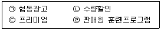
- ㉠, ㉡, ㉢
- ㉠, ㉡, ㉣
- ㉠, ㉢, ㉣
- ㉡, ㉢, ㉣
- ㉠, ㉡, ㉢, ㉣
(정답률: 52%)
61. 엔드매대에 진열할 상품을 선정하기 위한 점검사항으로 가장 옳지 않은 것은?
- 주력 판매가 가능한 상품의 여부
- 시즌에 적합한 상품의 여부
- 대량 판매가 가능한 상품의 여부
- 새로운 상품 또는 인기상품의 여부
- 전체 매장의 테마 및 이미지를 전달할 수 있는 상품의 여부
(정답률: 43%)
62. 아래 글상자에서 ㉠이 설명하는 비주얼머천다이징(Visual Merchandising) 요소로 옳은 것은?
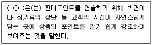
- VMP(visual merchandising presentation)
- VP(visual presentation)
- PP(point of sale presentation)
- IP(item presentation)
- SI(store identity)
(정답률: 58%)
63. 효과적인 POP 광고에 대한 설명 중 가장 옳지 않은 것은?
- 소비자들에게 충동구매를 이끌어낼 수 있다.
- 벽면과 바닥을 제외한 모든 공간을 활용할 수 있어 매우 효과적이다.
- 계산대 옆에 설치하여 각종 정보나 이벤트를 안내하기에 효과적이다.
- 계절적인 특성을 살려 전체적인 분위기를 연출하기에 효과적이다.
- 소비자의 주목을 끌 수 있어 효과적이다.
(정답률: 65%)
64. 점포 설계 구성 요소에 대한 설명으로 옳지 않은 것은?
- 점포 외장: 점두, 출입구 결정, 건물외벽 등
- 점포내부 인테리어: 벽면, 바닥, 조명, 통로, 집기, 비품 등
- 진열: 구색, 카트, 포스터, 게시판, POP 등
- 레이아웃: 상품배치, 고객동선, 휴게공간, 사무실 및 지원시설 등
- 조닝: 매장의 집기, 쇼케이스, 계산대 등의 매장 내 배치
(정답률: 56%)
65. 점포를 설계하기 위해서 점검해야 할 사항으로 가장 옳지 않은 것은?
- 많은 고객을 점포로 들어오게 할 수 있는가?
- 매장의 객단가를 높일 수 있는가?
- 적은 인원으로 매장 환경을 유지할 수 있는가?
- 검수 및 상품 보충과 같은 작업이 원활하게 이루어질 수 있는가?
- 고객 동선과 판매원 동선을 교차시켜 상품노출을 극대화 할 수 있는가?
(정답률: 48%)
66. 상품 카테고리의 수명주기단계에서 상품구색의 깊이를 확장하는 전략을 적용하는 것이 가장 옳은 단계는?
- 도입기
- 성장기
- 성숙기
- 쇠퇴기
- 재활성화기
(정답률: 59%)
67. 대형마트에 대한 영업시간 제한과 의무휴업일 지정에 대한 법규의 내용을 소개한 것으로 옳지 않은 것은?
- 영업시간 제한과 의무휴업일 지정은 광역시 및 도 단위로 이루어진다.
- 특별자치시장ㆍ시장ㆍ군수ㆍ구청장은 매월 이틀을 의무휴업일로 지정하여야 한다.
- 중소유통업과의 상생발전, 유통질서 확립, 근로자의 건강권을 위한 것이다.
- 의무휴업일은 공휴일 중에서 지정하되 이해당사자와 합의를 거쳐 공휴일이 아닌 날도 지정할 수 있다.
- 준대규모점포에 대하여도 영업시간 제한 및 의무휴업을 명할 수 있다.
(정답률: 43%)
68. 아래의 설명과 관련된 서비스 수요관리전략으로 가장 옳은 것은?
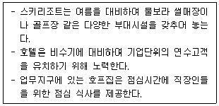
- 수요재고화 전략
- 수요조절전략
- 가용능력변화 전략
- 가용능력고정 전략
- 목표시장 다변화전략
(정답률: 34%)
69. 아래의 글상자는 원가가산 가격결정을 위한 원가구조와 예상판매량이다. 원가가산 가격결정 방법에 의해 책정한 가격으로 옳은 것은?
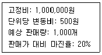
- 875원
- 3,000원
- 1,875원
- 7,500원
- 1,125원
(정답률: 49%)
70. 다음 중 격자형 레이아웃의 장점에 해당하는 것은?
- 시각적으로 고객의 주의를 끌어 개별 매장의 개성을 표출할 수 있다.
- 매장의 배치가 자유로워 고객의 충동구매를 유도할 수 있다.
- 주동선, 보조동선, 순환통로, 설비표준화로 비용이 절감된다.
- 고급상품 매장이나 전문점 같이 고객 서비스를 강조하는 매장에서 주로 활용한다.
- 의류상품에 적합한 레이아웃으로 쇼핑의 즐거움을 배가시킬 수 있다.
(정답률: 65%)
4과목: 유통정보
71. 아래 글상자의 괄호에 들어갈 용어로 가장 옳은 것은?
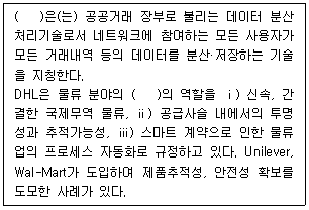
- 드론(drone)
- 블록체인(blockchain)
- 핀테크(FinTech)
- EDI(electronic data interchange)
- 비트코인(bitcoin)
(정답률: 49%)
72. 자기의 수요를 예측하여 해당하는 양을 주문하고자 할 때, 수요정보의 처리과정에서 왜곡현상이 나타날 수 있다. 소비자에게 판매될 시점의 데이터를 실시간으로 수집할 수 있도록 기능을 지원하는 정보기술로 가장 옳은 것은?
- POS(Point Of Sales) 시스템
- IoT(Internet of Things)
- BYOD(Bring Your Own Device)
- ONO(Online and Offline)
- JRE(Java Runtime Environment)
(정답률: 78%)
73. 아래 글상자의 내용을 근거로 경영과학 관점의 의사결정과정을 순차적으로 나열한 것으로 가장 옳은 것은?
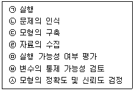
- ㉡ - ㉢ - ㉣ - ㉤ - ㉥ - ㉦ - ㉠
- ㉡ - ㉢ - ㉣ - ㉥ - ㉤ - ㉦ - ㉠
- ㉡ - ㉣ - ㉥ - ㉢ - ㉦ - ㉤ - ㉠
- ㉡ - ㉣ - ㉥ - ㉦ - ㉢ - ㉤ - ㉠
- ㉡ - ㉣ - ㉦ - ㉤ - ㉢ - ㉥ - ㉠
(정답률: 59%)
74. 이동성과 접근성을 기반으로 한 모바일 컴퓨팅의 특징으로 가장 옳지 않은 것은?
- 개인화
- 편리성
- PC의 보편화
- 접속의 즉시성
- 제품과 서비스의 지역화
(정답률: 39%)
75. (주)대한전자의 상품 A의 연간 판매량은 60,000개이다. 또한, 주문한 상품 A가 회사에 도착하기 까지는 10일이 소요되며, 상품 A의 안전재고량은 3,000개이다. (주)대한전자는 연간 300일을 영업할 경우, 상품 A에 대한 재주문점의 크기를 구한 값으로 옳은 것은?
- 2,000개
- 3,000개
- 4,000개
- 5,000개
- 6,000개
(정답률: 40%)
76. 데이터 웨어하우스(Data Warehouse)의 특성으로 옳지 않은 것은?
- 데이터 웨어하우스 내의 데이터는 주제지향적으로 구성되어 있다.
- 데이터 웨어하우스 내의 데이터는 시간의 흐름에 따라 시계열적으로 저장된다.
- 데이터 웨어하우스 내의 데이터는 거래 및 사건의 흐름에 따라 체계적으로 저장된다.
- 데이터 웨어하우스는 다양한 정보시스템의 데이터의 통합관리를 지원해준다.
- 데이터 웨어하우스는 데이터 마트(Data Mart)의 하위시스템으로 특정 이용자를 위해 디자인된 특화된 데이터베이스이다.
(정답률: 68%)
77. 웹언어에 대한 설명으로 옳지 않은 것은?
- CGI는 서버와 외부 데이터, 응용 프로그램 간의 인터페이스 정의
- XML은 HTML과 달리 규정된 태그만 사용하는 것이 아닌 사용자가 원하는 태그를 만들어 응용 프로그램에 적용 가능
- XML은 다른 목적의 마크업 언어를 만드는데 사용되는 다목적 마크업 언어
- HTML, XML 순으로 발전하고 SGML은 HTML, XML 단점을 보완하여 등장
- 마크업언어는 웹 서버에 저장된 문자, 그림, 표, 음성, 동영상 등을 모두 포함한 문서를 클라이언트가 다운로드받아 웹 브라우저에서 표현
(정답률: 49%)
78. 전자상거래 지능형 에이전트가 일반 소프트웨어 프로그램과는 다른 특징에 대한 설명으로 가장 옳지 않은 것은?
- 추론 능력을 갖추고 있어 스스로 문제를 해결할 수 있다.
- 컴퓨터를 작동시키거나 이용하여 업무를 처리할 수 있다.
- 사용자가 관여하지 않아도 스스로 어떤 목표를 달성하기 위해 일을 완수할 수 있다.
- 통신능력을 확장하여 다른 에이전트 프로그램 또는 외부 세계와 협동하여 일을 수행할 수 있다.
- 필요에 따라 어떤 일을 수행하는 중에 다른 에이전트 프로그램 또는 외부 세계와 통신할 수 있다.
(정답률: 47%)
79. 아래 글상자의 ( )안에 공통적으로 들어갈 용어로 가장 옳은 것은?
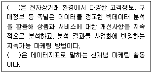
- 피싱(phishing)
- 파밍(pharming)
- 바이럴 마케팅(viral marketing)
- 그로스해킹(growth hacking)
- 스미싱(smishing)
(정답률: 33%)
80. 아래 글상자의 괄호에 들어갈 용어를 순서대로 나열한 것으로 가장 옳은 것은?
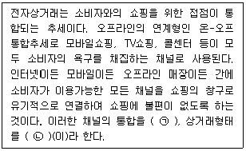
- ㉠ 옴니채널(omni channel)
㉡ 비콘(beacon) - ㉠ O2O(online to offline)
㉡ 비콘(beacon) - ㉠ One채널(one channel)
㉡ ONO(online and offline) - ㉠ 옴니채널(omni channel)
㉡ O2O(online to offline) - ㉠ One채널(one channel)
㉡ BYOD(bring your own device)
(정답률: 69%)
81. 바코드마킹과 관련된 설명 중에서 가장 옳은 것은?
- 제조업체가 생산시점에 바코드를 인쇄하는 것은 인스토어마킹이다.
- 소매상이 자신의 코드를 부여해 부착하는 것은 소스마킹이다.
- 소스마킹은 생산시점에서 저렴한 비용으로 바코드 부착이 가능하다.
- 인스토어마킹은 업체간 표준화가 되어 있다.
- 인스토어마킹은 동일상품에 동일코드가 지정될 수 있다.
(정답률: 56%)
82. 바코드(bar code)에 포함된 정보로 옳지 않은 것은?
- 국가식별코드
- 제조업체코드
- 상품품목코드
- 체크디지트
- 제조일시
(정답률: 67%)
83. 아래의 그림은 조달청에서 제공하는 서비스 화면이다. 협상에 의한 계약 전 과정에 대하여 사업발주를 위한 제안요청서 작성부터 평가, 사업관리 등 사업의 처음부터 끝까지 서비스하는 시스템 명칭으로 가장 옳은 것은?
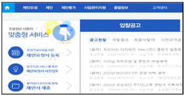
- e-담합감시정보시스템
- e-온라인평가시스템
- e-협업시스템
- e-정보공유시스템
- e-발주시스템
(정답률: 54%)
84. 유통업체의 QR 물류시스템(Quick Response Logistics Systems) 도입효과로 가장 옳지 않은 것은?
- 공급사슬에서 효과적인 재고관리를 가능하게 해준다.
- 공급사슬에서 상품의 흐름을 개선한다.
- 공급사슬에서 정보공유를 통해 제조업체의 효과적인 제품 생산 활동을 지원한다.
- 공급사슬에서 정보공유를 통해 유통업체의 효과적인 상품 판매를 지원한다.
- 공급사슬에서 제조업의 원재료 공급방식이 풀(pull) 방식에서 푸시(push) 방식으로 개선되었다.
(정답률: 74%)
85. 기업들이 지식관리시스템을 구축하는 이유에 대한 설명으로 가장 옳지 않은 것은?
- 기업들은 최선의 관행, 즉 베스트 프랙티스(best practice)를 공유할 수 있다.
- 기업들은 노하우 활용을 통해 제품과 서비스의 가치를 개선할 수 있다.
- 기업들은 경쟁우위를 창출하기 위한 지식을 용이하게 활용할 수 있다.
- 기업들은 경영혁신을 위한 적절한 지식을 적절히 포착할 수 있다.
- 기업들은 기업과 기업간 협업을 줄이고, 독자 경영을 할 수 있다.
(정답률: 77%)
86. POS(point of sales) 시스템으로부터 획득한 정보에 대한 설명으로 가장 옳지 않은 것은?
- 상품분류체계의 소분류까지 업태별, 지역별 판매금액 구성비
- 상품분류체계의 소분류를 기준으로 해당 단품의 월별 판매금액
- 품목의 자재 조달, 제조, 유통채널 이동 이력 관련 정보
- 품목의 현재 재고정보
- 제조사별 품목별 판매 순위
(정답률: 59%)
87. 조직의 혁신적 성과향상을 도모하기 위해 비즈니스 프로세스 재설계(Business Process Reengineering)를 전략적으로 선택한다. 이에 대한 설명으로 옳지 않은 것은?
- 현재의 비즈니스 프로세스를 AS IS PROCESS라고 한다.
- 미래의 비즈니스 프로세스를 TO BE PROCESS라고 한다.
- BPR은 점진적인 프로세스 개선을 통한 성과창출을 목표로 한다.
- 기업에서는 ERP 시스템을 구축하기 위한 사전 작업으로 BPR을 추진한다.
- BPR은 비용, 품질, 시간 등 조직의 성과를 혁신적으로 향상시키는 것을 목표로 한다.
(정답률: 37%)
88. 기업에서의 지식경영의 중요성은 강조하고, SECI 모델(Socialization, Externalization, Combination, Internalization Model)을 제시한 연구자는?
- 노나카 이쿠지로(Ikujiro Nonaka)
- 빌 게이츠(Bill Gates)
- 로버트 캐플런(Robert Kaplan)
- 마이클 포터(Michael Porter)
- 마이클 해머(Michael Hammer)
(정답률: 65%)
89. 바코드(bar code)에 대한 설명으로 옳지 않은 것은?
- EAN-8(단축형 바코드)은 단축형 상품식별코드(GTIN-8)를 나타낼 때 사용하는 바코드이다.
- 기존 상품과 중량 또는 규격이 다른 경우 새로운 상품으로 간주하고 새로운 상품식별코드를 부여한다.
- 바코드 스캐너는 적색계통의 색상을 모두 백색으로 감지하여 백색바탕에 적색 바코드인 경우 판독이 불가능하다.
- 바코드 높이를 표준 규격보다 축소할 경우 인식이 불가능하다.
- 해당 박스에 특정 상품 입수개수가 다르다면 새로운 표준물류식별코드를 부여한다.
(정답률: 61%)
90. 아래 글상자에서 설명하는 e-비즈니스 간접 수익창출방식으로 가장 옳은 것은?
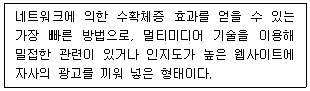
- 프로그램 무상 배포
- 스폰서십
- 무료메일 제공
- 제휴 프로그램
- 배너광고
(정답률: 78%)
㉠판매물류는 제품이 생산된 후 출하되어 고객에게 판매될 때까지의 물류영역을 말하며, ㉡폐기물류는 제품이 폐기되는 과정에서의 물류영역을 말한다.
따라서, 판매되지 않은 제품이나 유통기한이 지난 제품 등이 폐기되는 과정에서 ㉡폐기물류가 발생하게 된다.